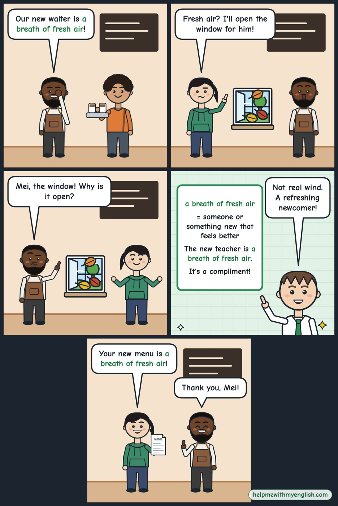

a breath of fresh air
Someone or something new and different that makes things feel better.
The new teacher is a breath of fresh air. Her classes are so fun.
Tip: Say 'X is a breath of fresh air' about a person, place or idea that feels new and refreshing compared with what you're used to; it is a compliment, so don't use it for something you simply find 'new'.
Hear it in conversation
Workbook
1. What does it mean?
In this conversation, what does 'a breath of fresh air' mean?
2. Fill the gap
After years of the same old routine, the new café on our street is .
3. Choose the best reply
Amira: Have you met Ken's cousin? She just joined our department and she's so positive.
4. Your turn: speak
Tell me about a person or place that made a positive change in your life.
Show an example answer
When I moved to a new city for my studies, my flatmate was a breath of fresh air. I'd been feeling quite lonely, but she invited me to everything and made the whole place feel like home. Because of her, I made friends much faster than I'd expected.
Answer key: a breath of fresh air
- 1. C. Someone new and different who makes things feel better
- 2. a breath of fresh air
- 3. C. Yes, she's a breath of fresh air. Everyone's mood has lifted since she arrived.
- 4. Example: When I moved to a new city for my studies, my flatmate was a breath of fresh air. I'd been feeling quite lonely, but she invited me to everything and made the whole place feel like home. Because of her, I made friends much faster than I'd expected.
See it in a comic
